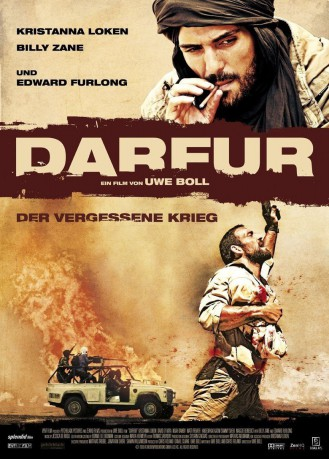

#3935 Darfur: Der vergessene Krieg
Alternativ: Attack on Darfur (Englischer Titel)
 
 IMDB-Wertung: 6.0 / 10
IMDB-Wertung: 6.0 / 10  Metascore: 0
Metascore: 0 
Seit 2003, und in den Medien kaum vertreten, befindet sich Darfur, eine Region im Westen Sudans, in einem Ausnahmezustand. Zwei Rebellengruppen bekriegen einander und die Zivilbevölkerung. Eine in Darfur recherchierende Gruppe idealistischer US-Journalisten erfährt von der baldigen Ankunft einer Miliz an ihren Standort und muss eine schwerwiegende Entscheidung treffen: Stellen sie sich der Gefahr, um der Welt die Wahrheit zu berichten und den Dorfbewohnern beizustehen, oder ergreifen sie die Flucht, um ihr Leben zu schützen?
Jahr: 2009
Dauer: 98 Minuten
FSK: 18
Land: Kanada Studio: Splendid FilmTonspuren: DTS - ,
Untertitel: Deutsch,
Auflösung: 1080p (1920x800) Größe: 6553 MB
Genre: Drama, Krieg
Regisseur: Uwe Boll
Drehbuch: Bart De Pauw
Soundtrack:
Darsteller:
 Kristanna Loken als Malin Lausberg
Kristanna Loken als Malin Lausberg David O'Hara als Freddie Smith
David O'Hara als Freddie Smith Noah Danby als Theo Schwartz
Noah Danby als Theo Schwartz Matt Frewer als Ted Duncan
Matt Frewer als Ted Duncan Hakeem Kae-Kazim als Captain Jack Tobamke
Hakeem Kae-Kazim als Captain Jack Tobamke Sammy Sheik als Janjaweed Commander
Sammy Sheik als Janjaweed Commander Billy Zane als Bob Jones
Billy Zane als Bob Jones Edward Furlong als Adrian Archer
Edward Furlong als Adrian Archer- Sarah Muhoho als Fatima
- Maggie Benedict als Halima
- Fatima Masapu als Munira
- Tshegofatso Mashao als Sumah
- Thando Sibeko als Poni
- Yolanda Msimanga als Mende
- Tauriq Jenkins als Musa
- Olise Ikechukwu als Mohammed - Yusuf's Son
- Az Abrahams als Sadiq
- Maboni Nyakta als Abok
- Charly Mukwayanzo als Sudanese Army Officer
- Yolani Mashologu als Halima's Baby
- Angel Barnard als Sittina
- Assante Barnard als Baccry
- Lehasa Moloi als Janjaweed Jeep Driver
 Anthony Oseyemi als AU Soldier
Anthony Oseyemi als AU Soldier- Busisiwe Joyce als Elham
- Astara Mwakalumbwa als Kaltouma
- Ntombizine Margaret als Elderly Woman
- Moses Mapukata als Elderly Man
- Harrison Makubalo als Young Janjaweed Soldier
- Anelisa Phewa als Janjaweed Militia
- Ezra Mabengeza als Janjaweed Militia
- Owen Manamela als Janjaweed Militia
- Kaashief Noroordien als Janjaweed Militia
- Rea Rangkaka als Janjaweed Militia
- Nkosinathi Mgweba als Janjaweed Militia
- Martin Kintu als Janjaweed Militia
- Denzil Thompson als Janjaweed Militia
Datei: X:\FSK18-2000-2009\Darfur Der vergessene Krieg (2009, FSK18, 1920x800).mkv seit 02.07.2016
Festplatte: FSK18
 Es gibt insgesamt 106 Filme in der Gruppe 'FSK18-2000-2009'
Es gibt insgesamt 106 Filme in der Gruppe 'FSK18-2000-2009'